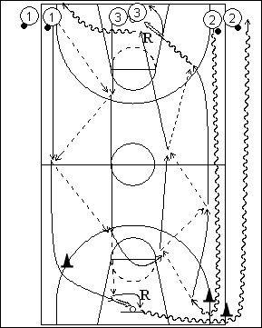

Catégorie : ECHAUFFEMENT (Ech-003)
Déroulement
- Trois files à la baseline. Les ballons sont dans les files 1 et 2.
- Les trois premiers joueurs partent en même temps. 1 et 3 se passent le premier ballon, tandis que 2 dribble et contourne le cône du fond. Après sa dernière passe à 1 pour un lay-up, le joueur 3 revient en passes avec le ballon de 2 qui reçoit également pour un lay-up.
- 1 effectue son rebond et va en dribble par l’extérieur du terrain dans la file 2. Après son lay-up, 2 va en 3. 3 effectue le rebond et va en dribble dans la file 1.
Coaching points
- Insister pour que les trois joueurs partent exactement en même temps. S’il y a des joueurs excédentaires, les placer dans la file 2.
- Demander aux joueurs des files 1 et 3 de progresser en passes en restant bien dans leur moitié de terrain (sur la longueur). Idem pour le retour avec les joueurs 2 et 3. De la sorte, la vague de trois suivante peut démarrer dès que les joueurs précédents amorcent leur retour.